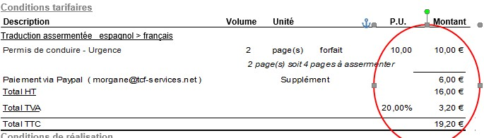

Malgré la courte durée de mon stage chez TCF, j’ai eu la chance de participer à certaines missions administratives et de comprendre le fonctionnement d’une entreprise individuelle, et notamment sur la comptabilité. Au mois de mai, à mon arrivée, c’était la période du bilan comptable annuel. Mme Le Bihan a alors enchaîné plusieurs longs rendez-vous avec sa comptable en l’espace de quelques semaines. L'établissement du bilan comptable est une étape majeure visant à valider le bon fonctionnement de la société. Mais c’est également un processus long à effectuer tout au long de l’année. Ainsi, régulièrement je triais les reçus des achats pour la société ou en rapport avec les activités de celle-ci. Le but est de chaque mois faire le point sur les dépenses et rentrées, et de les classer pour le prochain bilan annuel avec la comptable, mais surtout de déclarer la TVA de l’entreprise au 19 de tous les mois. Dans ce calcul rentrent toutes les dépenses de l’entreprise, du bureau pour travailler jusqu’au repas lors d’un déplacement d’interprétation, et en passant par les fournitures papier, les envois à La Poste ou encore les billets de train pour une formation.
À chaque fin de mois, il faut également faire le point sur les factures non payées des clients et celles à payer aux sous-traitants. Même si on est indépendant, il existe des délais (ex : déclaration d’impôt, comptable, paiements…) à respecter. Dans ce cas de figure, faire le point sur les factures permet de savoir quel est le bénéfice du mois et de se revirer un salaire, comme dans une entreprise « traditionnelle ». La rémunération est variable, chose que j’ai pu constater sur deux mois. D’un mois à un autre, le salaire qu’on retire de la société n’est jamais le même. Mme Le Bihan applique alors un raisonnement à l’année, afin de compenser un mois plus mauvais qu’un autre ou des semaines de vacances. Je vais maintenant prendre un exemple concret de mon implication dans la gestion de la comptabilité de l'entreprise avec la déclaration de TVA. Celle-ci demande un suivi presque quotidien afin de ne pas se retrouver en retard ou submergée et grâce à un logiciel, Mme Le Bihan suit tous les montants provenant de ses factures et de celles de ses sous-traitants. Il reste également à rentrer tous ses reçus de dépenses externes. Cette année, à la suite du rendez-vous annuel, la comptable a relevé un problème concernant les paiements avec Paypal. En effet, sur chaque devis particulier, Mme Le Bihan propose deux types de paiements par avance : via Paypal, qui entraîne un supplément de 6 € et par chèque envoyé par La Poste. Or, puisque le prospect a le choix, le montant Paypal était simplement rajouté sur une ligne après le montant TTC. L’erreur que la comptable a relevée est de ne pas appliquer par conséquent la TVA sur ce supplément Paypal de 6 €. Le problème que cela a posé donc pour nous était le suivant : si on change d’emplacement le montant pour le placer avant le montant TTC afin que la TVA s’applique à ce supplément, le montant du devis n’est pas juste pour les clients choisissant de payer par chèque. Mais si on l’enlève, la possibilité est totalement fermée sur le devis et Paypal n’est plus du tout proposé. Après discussion, j’ai alors proposé l’option d’enlever le choix Paypal du devis par défaut et de le proposer à part aux clients lors de situation d’urgence. Cela oblige à faire au cas par cas par téléphone avec le client, mais évite d’avoir à faire deux devis par demande, l’un avec paiement par chèque et l’autre par Paypal. Par pur hasard, la situation s’est présentée le lendemain nous permettant de tester ma solution proposée. Un client a appelé pour une traduction en urgence, ce à quoi Mme Le Bihan lui a proposé l’option Paypal pour un paiement immédiat et donc une traduction plus vite effectuée. Le devis que j’ai alors créé pour ce client a été légèrement modifié pour appliquer la TVA sur le supplément Paypal. Cette solution est apparue comme fonctionnelle, et sera certainement réutilisée dans le futur.

Également, plus les projets s’enchaînent et plus les papiers s’entassent. Chaque jour, Mme Le Bihan range et classe ses documents afin de créer ses archives personnelles. Chaque classeur ou pochette a sa fonction et est trié soigneusement pour retrouver facilement un document en particulier. Les factures, devis, bons de commande et autres ont chacun une place bien précise. Les projets en cours sont séparés des projets terminés, et les devis en attente sont également classés. Chaque chose a son importance et sa place dans le bureau. Mme Le Bihan a même mis en place un système « artisanal » de petite fiche de suivi, qui résume chaque projet depuis la réception du mail jusqu’à la livraison puis la facturation de la traduction.
Organisation : c’est le maître mot d’une activité indépendante.